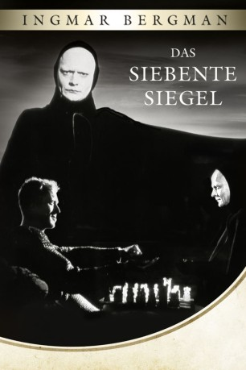

#11669 Das Siebente Siegel
Alternativ: The Seventh Seal (Englischer Titel)
 
 IMDB-Wertung: 8.2 / 10
IMDB-Wertung: 8.2 / 10  IMDB-TOP-Platzierung: 147
IMDB-TOP-Platzierung: 147  Tomatometer: 93
Tomatometer: 93  Metascore: 0
Metascore: 0 
Mitte des 14. Jahrhunderts durchstreift die Pest ganz Europa. Der Ritter Antonius Block, ist als junger Mann hinaus in das Heilige Land gezogen um seinen Glauben zu festigen. Er kehrt in seine Heimat Schweden zurück, da ihn Zweifel an der Existenz Gottes quälen. Der Schwarze Tod hat auch dort Angst und Schrecken verbreitet. Der personifizierte Tod steht ihm gegenüber. Antonius Block bittet um Aufschub und schlägt ihm eine Partie Schach vor, die die Entscheidung über sein junges Leben fällen soll. Bevor er sterben muß, möchte der Ritter noch eine bedeutende Tat vollbringen: eine herumziehende Schauspielerfamilie, die inmitten aller Leiden ihre Lebensfreude bewahrt hat, möchte er retten.
Jahr: 1957
Dauer: 97 Minuten
FSK: 16
Land: Schweden Studio: Constantin FilmTonspuren:
Untertitel: Deutsch,
Auflösung: 1080p (1440x1080) Größe: 6717 MB
Genre: Drama, Fantasy
Regisseur:  Ingmar Bergman
Ingmar Bergman
Drehbuch: Ingmar Bergman, Ingmar Bergman
Soundtrack: Erik Nordgren
Darsteller:
 Gunnar Björnstrand als Jöns, squire
Gunnar Björnstrand als Jöns, squire- Bengt Ekerot als Death
- Nils Poppe als Jof / Joseph
 Max von Sydow als Antonius Block
Max von Sydow als Antonius Block Bibi Andersson als Mia / Mary - Jof's wife
Bibi Andersson als Mia / Mary - Jof's wife- Inga Gill als Lisa, blacksmith's wife
 Maud Hansson als Witch
Maud Hansson als Witch- Inga Landgré als Karin, Block's Wife
 Gunnel Lindblom als Girl
Gunnel Lindblom als Girl- Bertil Anderberg als Raval
- Anders Ek als The Monk
- Åke Fridell als Blacksmith Plog
- Gunnar Olsson als Albertus Pictor, Church Painter
- Erik Strandmark als Jonas Skat
- Benkt-Åke Benktsson als Merchant at the inn (uncredited)
- Gudrun Brost als Woman at inn (uncredited)
- Tor Isedal als Man (uncredited)
- Ulf Johansson als Knight Commander (uncredited)
- Lars Lind als The young monk (uncredited)
- Mona Malm als Young pregnant woman (uncredited)
- Gösta Prüzelius als Man (uncredited)
- Georg Skarstedt als Flagellant (uncredited)
 Marc Smith als Plog the Blacksmith (uncredited)
Marc Smith als Plog the Blacksmith (uncredited)- Siv Aleros als Flagellant (uncredited)
- Sten Ardenstam als Knight (uncredited)
- Harry Asklund als The landlord (uncredited)
- Catherine Berg als Young woman kneeling for the flagellants (uncredited)
- Lena Bergman als Young woman kneeling for the flagellants (uncredited)
- Tor Borong als Farmer at the inn (uncredited)
- Bengt Gillberg als Flagellant (uncredited)
- Lars Granberg als Flagellant (uncredited)
- Gunlög Hagberg als Flagellant (uncredited)
- Gun Hammargren als Flagellant (uncredited)
- Tommy Karlsson als Mikael, Jof and Maria's son (uncredited)
- Uno Larsson als Flagellant (uncredited)
- Lennart Lilja als Flagellant (uncredited)
- Monica Lindman als Flagellant (uncredited)
- Gordon Löwenadler als Knight (uncredited)
- Josef Norman als Old man at the inn (uncredited)
- Helge Sjökvist als Flagellant (uncredited)
- Ragnar Sörman als Flagellant (uncredited)
- Fritjof Tall als Man (uncredited)
- Lennart Tollén als Flagellant (uncredited)
- Nils Whiten als Old man addressed by the monk (uncredited)
- Caya Wickström als Flagellant (uncredited)
- Karl Widh als Man with crutches (uncredited)
Datei: X:\1950-1959\Siebente Siegel, Das (1957, FSK16, 1440x1080).mkv seit 14.08.2019
Festplatte: Gemischt-01+Anime
 Es gibt insgesamt 141 Filme in der Gruppe '1950-1959'
Es gibt insgesamt 141 Filme in der Gruppe '1950-1959'